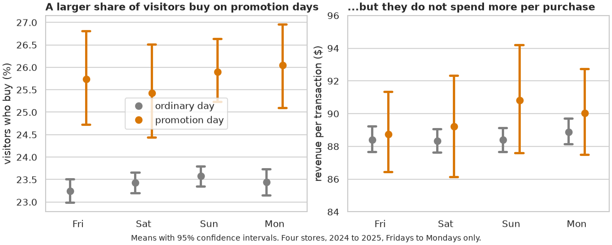

🏔️ Lesson 8.1: The Pinecrest Report
One question, your choice. One page of findings, your words. Everything in between is the course you have just completed, used the way analysts use it.
🎯 Learning Objectives
By the end of this capstone, you will be able to:
- Turn a business question into a written analysis plan before touching the data
- Carry an analysis from raw files to a tested, quantified answer, working independently
- Report a result with its estimate, confidence interval, test, effect size and caveats
- Present the answer in a one-page report with one or two figures that state their finding
- Make the work reproducible, review it against a rubric, and share it responsibly
In This Lesson
📨 The Brief
Until now every lesson has told you what to do next. This one does not, on purpose. Real analysis rarely arrives as numbered steps. It arrives as a question from someone who needs a decision, a folder of files, and a deadline. The skill that turns your forty lessons into something an employer or a client can use is the ability to get from that question to a trustworthy answer without being told the route.
From: Pinecrest Outfitters leadership
We have four questions that keep coming up in meetings, and opinions on all of them. We would like evidence. Please pick one, investigate it with the data we have, and send us one page: what you found, how sure you are, and what you could not tell. We will read the page, not the code, but someone on our side may rerun your notebook to check the numbers.
💡 Mental Model: The Expedition
A capstone is a trip you plan and lead yourself. You choose the destination (the question), check your gear (the data), set out with a route in mind (the plan), and change the route when the ground turns out different from the map (it will). What you bring back is not the hours of walking. It is a short, honest account of what is there: the one-page report. Nobody is impressed by a long trip. They are impressed by a reliable account.
What You Will Hand In
| Deliverable | What it is | Who it is for |
|---|---|---|
pinecrest_report.ipynb | A notebook that runs from a fresh start to the end without errors and produces every number and figure in the report | The colleague who checks your work, and you in six months |
| One or two figures (PNG) | Saved from the notebook, each with a title that states its finding | The reader of the report |
report.md (one page) | Question, answer, evidence, caveats, next questions | A manager with five minutes |
| Optional: an app or interactive file | A Streamlit dashboard or a Plotly or Bokeh HTML file that lets the reader explore the result | A reader who will ask follow-up questions |
The arrows that loop back are not failures. Finding a data problem while exploring, or a better question while testing, is what a real analysis looks like. Budget time for it.
🤔 Why This Matters
A finished, self-directed analysis is the most persuasive thing you can show for this course. It demonstrates judgment, which no quiz can: what you chose to check, what you refused to claim, how clearly you wrote. It is also the first piece of work that is entirely yours.
🧭 Choose Your Question
Each of the four questions below can be answered from the course data, and none has been answered in a lesson. They differ in which skills they lean on. Read all four, then choose the one you are most curious about: curiosity will carry you through the tedious parts better than ease will.
Question A: Why is Asheville falling behind?
You saw in Lessons 4.7 and 7.1 that Asheville is the one store whose revenue fell from 2024 to 2025. Leadership wants to know what kind of problem that is. Are fewer people coming in, are fewer of them buying, or are they spending less when they buy?
Main data: daily_sales.csv. Possibly useful: store_weather.csv, survey.csv, sales_2025.xlsx.
Leans on: time series, ratios, comparison between stores, careful wording about cause.
Think about: revenue can be written as visitors × (share who buy) × (spend per purchase). Which factor moved? Is the pattern steady through the year or concentrated in certain months? What would the other three stores' figures need to look like for you to call Asheville unusual?
Question B: Does it matter how we found the customer?
Marketing spends money on paid search and social media, and the stores sign people up at the register. Some managers believe referred customers are "worth twice as much". Do customers from the five acquisition channels differ in what they go on to spend?
Main data: customers.csv, orders.csv.
Leans on: merging, group comparison with more than two groups, skewed data, effect sizes, reporting a result whichever way it comes out.
Think about: what does "worth" mean: total spend, number of orders, whether they ever buy at all? Which orders count? Do the channels' customers have the same amount of time behind them in which to spend? How many pairs of channels could you compare, and what does that do to your p-values?
Question C: Does the welcome discount bring people back?
The WELCOME10 code gives 10% off, and in the data it is only ever used on a customer's first order on record. It costs margin on every use. The argument for it is that customers who start with a discount come back. Do they?
Main data: orders.csv. Possibly useful: customers.csv.
Leans on: building per-customer features from order history (Lesson 2.9), comparing two proportions (Lesson 4.6), spotting an unfair comparison.
Think about: how will you define "first order" and "came back" in data that starts on 2024-01-01? A customer whose first order was last month has had little time to return: how will you make the comparison fair? Customers chose whether to use the code. What does that mean for the word "because"?
Question D: What did the March 2025 price increase do to sales?
On 2025-03-01 Pinecrest raised the list price of about half its catalog. Finance wants to know whether the repriced products then sold fewer units than they otherwise would have.
Main data: order_items.csv, orders.csv, products.csv.
Leans on: multi-table merges, identifying groups from the data itself, seasonality, reasoning about what would have happened otherwise. This is the most demanding of the four.
Think about: which products were repriced? (The price actually charged is in order_items.unit_price; products.price is today's price only.) Sales are seasonal and the company is growing, so "before against after" is not a fair comparison on its own. What comparison would be fairer? What can and cannot be concluded when the products were not chosen at random?
⚠️ An Honest "No Clear Difference" Is a Full Answer
At least one of these questions has an answer that will disappoint somebody in that meeting. Your job is not to find an effect. It is to find out what the data supports, and say how firmly. A well-supported "we looked carefully and there is no meaningful difference, here is how big a difference we could have missed" scores exactly as well on the rubric as a dramatic discovery, and is often more valuable.
You may propose your own question about the Pinecrest data instead. If you do, it must pass three checks: it names a decision someone could make with the answer, the data to answer it exists in data/, and no lesson's project already answered it (returns of online footwear, the checkout A/B test, staffing and revenue, and rain and visitors are taken).
🔬 A Worked Mini-Example
To show the standard expected, here is a complete small analysis of a different question, at about a third of the size of yours. Read it for its shape: plan, check, fair comparison, quantified result, one figure, short note. Type along if you like. The helper cohens_d is the one you wrote in Lesson 4.5.
The question
"Sale weekends are our biggest days. Is that only because more people come in, or do we also sell to a larger share of the people who come, and do they spend more each?"
1. Plan, in Writing, Before Any Code
Decision it informs: whether promotions should be judged by foot traffic alone.
Data: daily_sales.csv (one row per store per day; promo_day marks sale days).
Measures: visitors; conversion = transactions ÷ visitors; basket = revenue ÷ transactions.
Comparison: promotion days against ordinary days. Risk: sale days may fall on particular weekdays, which are busier anyway. Check, and compare like with like.
What would change my mind: if conversion and basket are the same on sale days, promotions only move traffic.
2. Load and Check
import matplotlib.pyplot as plt
import numpy as np
import pandas as pd
import seaborn as sns
from scipy import stats
pd.set_option("display.width", 150)
sales = pd.read_csv("data/daily_sales.csv", parse_dates=["date"])
sales["weekday"] = sales["date"].dt.day_name().str[:3]
sales["conversion"] = sales["transactions"] / sales["visitors"]
sales["basket"] = sales["revenue"] / sales["transactions"]
print(sales.shape, "| missing revenue:", sales["revenue"].isna().sum())
print(sales["promo_day"].value_counts().to_dict())
print(sales.loc[sales["promo_day"] == 1, "weekday"].value_counts().to_dict())Output
(2903, 11) | missing revenue: 6
{0: 2807, 1: 96}
{'Fri': 24, 'Sat': 24, 'Sun': 24, 'Mon': 24}The check paid off at once. All 96 promotion store-days fall on a Friday, Saturday, Sunday or Monday, 24 on each: they are four-day holiday weekends. Comparing them with all ordinary days would mix in quiet Tuesdays and Wednesdays and flatter the promotions. The fair comparison is with ordinary Fridays to Mondays.
3. A Fair Comparison
long_weekend = sales[sales["weekday"].isin(["Fri", "Sat", "Sun", "Mon"])].dropna(subset=["revenue"])
promo = long_weekend[long_weekend["promo_day"] == 1]
ordinary = long_weekend[long_weekend["promo_day"] == 0]
table = long_weekend.groupby("promo_day")[["visitors", "conversion", "basket"]].mean()
table.loc["change_pct"] = (table.loc[1] / table.loc[0] - 1) * 100
print(len(promo), "promotion store-days,", len(ordinary), "ordinary ones")
print(table.round(3))Output
96 promotion store-days, 1568 ordinary ones
visitors conversion basket
promo_day
0 394.134 0.234 88.508
1 604.021 0.258 89.701
change_pct 53.253 10.048 1.3484. Quantify: Estimate, Interval, Test, Effect Size
def cohens_d(x, y):
"""Difference in means divided by the pooled standard deviation (Lesson 4.5)."""
nx, ny = len(x), len(y)
pooled_var = ((nx - 1) * np.var(x, ddof=1) + (ny - 1) * np.var(y, ddof=1)) / (nx + ny - 2)
return (np.mean(x) - np.mean(y)) / np.sqrt(pooled_var)
for measure, unit in [("conversion", "points"), ("basket", "dollars")]:
a, b = promo[measure], ordinary[measure]
result = stats.ttest_ind(a, b, equal_var=False)
low, high = result.confidence_interval()
scale = 100 if measure == "conversion" else 1
print(f"{measure:<10} difference {(a.mean() - b.mean()) * scale:+.2f} {unit} "
f"(95% CI {low * scale:+.2f} to {high * scale:+.2f}), "
f"Welch p = {result.pvalue:.2g}, d = {cohens_d(a, b):.2f}")Output
conversion difference +2.35 points (95% CI +1.85 to +2.86), Welch p = 2e-15, d = 0.93
basket difference +1.19 dollars (95% CI -0.29 to +2.68), Welch p = 0.11, d = 0.16Two measures, two different stories. Conversion is higher on sale days by a bit over two percentage points, with an interval well clear of zero and a large standardized effect. The basket difference is about a dollar, its interval includes zero, and the effect is small: no clear evidence that people spend more per purchase.
5. One Figure That States the Finding
sns.set_theme(style="whitegrid")
order = ["Fri", "Sat", "Sun", "Mon"]
labels = long_weekend["promo_day"].map({0: "ordinary day", 1: "promotion day"})
fig, axes = plt.subplots(1, 2, figsize=(10, 4), layout="constrained")
sns.pointplot(data=long_weekend, x="weekday", y=long_weekend["conversion"] * 100, hue=labels, order=order,
hue_order=["ordinary day", "promotion day"], palette=["#7f7f7f", "#d97706"],
errorbar=("ci", 95), seed=42, dodge=0.25, linestyle="none", capsize=0.12, ax=axes[0])
axes[0].set_title("A larger share of visitors buy on promotion days", loc="left", fontweight="bold")
axes[0].set(xlabel="", ylabel="visitors who buy (%)")
sns.pointplot(data=long_weekend, x="weekday", y="basket", hue=labels, order=order,
hue_order=["ordinary day", "promotion day"], palette=["#7f7f7f", "#d97706"],
errorbar=("ci", 95), seed=42, dodge=0.25, linestyle="none", capsize=0.12, legend=False, ax=axes[1])
axes[1].set_title("...but they do not spend more per purchase", loc="left", fontweight="bold")
axes[1].set(xlabel="", ylabel="revenue per transaction ($)", ylim=(84, 96))
sns.move_legend(axes[0], "center", title=None)
fig.supxlabel("Means with 95% confidence intervals. Four stores, 2024 to 2025, Fridays to Mondays only.", fontsize=9)
fig.savefig("promo_conversion.png", dpi=150)
plt.show()
6. The Note
Promotions raise conversion as well as traffic, but not basket size.
Findings. Compared with ordinary Fridays to Mondays, the 96 promotion store-days had 53% more visitors. A larger share of those visitors bought: 25.8% against 23.4%, a difference of 2.4 percentage points (95% CI 1.9 to 2.9; Welch t-test p < 0.001; d = 0.93, a large effect). Revenue per transaction was $89.70 against $88.51: a difference of $1.19 (95% CI −$0.29 to +$2.68; p = 0.11; d = 0.16), which is not distinguishable from zero.
Caveats. Promotions ran only on holiday weekends, so "promotion" and "holiday" cannot be separated with this data: people may simply buy more readily on holidays. The 96 store-days are 24 dates at four stores, which are not independent observations, so the intervals are somewhat too narrow. Door counters may behave differently in a crowd.
Next questions. What happens on a holiday weekend without a promotion, or a promotion on an ordinary weekend? Would Pinecrest run one as a test? Is the extra conversion profitable after the discount?
That is the whole analysis: about forty lines of code, one figure, 150 words. Notice what it did not do. It did not plot every column, try six tests, or claim that promotions cause the lift. Your capstone is the same shape, with more room in each step.
📄 The One-Page Report
The report is a plain Markdown file, report.md, short enough to print on one side of a sheet with its figures (about 300 to 450 words). Use this structure. It is the findings, caveats and next-questions note from Lesson 4.7, with the reporting template from Lesson 4.5 inside it.
# [A title that states your answer, not your topic]
**Question.** [The question, in one sentence, and the decision it informs.]
**Answer.** [Two or three sentences a manager could repeat in a meeting. Lead with the answer.
Give the main number with its uncertainty.]
**Evidence.**
- [Finding 1: what was compared, the estimate, the 95% interval, the test, the effect size.]
- [Finding 2, if any.]

**Caveats.** [What the data cannot tell us: who or what is missing, what could not be
separated, why "because" may be too strong. Two to four specific points.]
**Next questions.** [One to three things worth finding out, or data worth collecting.]
**Method.** [Three lines: the files used, the key definitions (for example what counts as a
repeat customer), and the notebook that reproduces every number: pinecrest_report.ipynb.]Sentences That Carry Their Evidence
Every quantitative claim in the report should have the five parts you practiced in Module 4. Compare:
| Weak | Strong |
|---|---|
| Promotions significantly increase conversion (p < 0.05). | On promotion days 25.8% of visitors bought, against 23.4% on comparable ordinary days: 2.4 points more (95% CI 1.9 to 2.9; Welch t-test p < 0.001; d = 0.93). |
| There is no difference in basket size. | Basket size differed by $1.19 (95% CI −$0.29 to +$2.68; p = 0.11): we cannot rule out a small difference in either direction, and can rule out one larger than about $3. |
| Promotions cause customers to buy. | Promotion days coincide with holiday weekends, so this data cannot separate the two. |
✅ The Figure Standards from Module 3 Apply
A title that states the finding. Axes labeled, with units. Color used for a reason (one accent against gray is often enough). Error bars identified in the caption. Saved from code at a stated size and resolution, for example fig.savefig("figure_1.png", dpi=150), or with your save_chart helper from Lesson 3.4. One excellent figure beats four adequate ones.
📏 The Rubric
Use this to judge your own work before anyone else does. "Proficient" in all six rows is a successful capstone and the standard a junior analyst is expected to meet. "Exemplary" is what makes a reviewer remember your name. If a row is at "Developing", that is not a verdict. It tells you where the next hour should go.
| Criterion | 1 · Beginning | 2 · Developing | 3 · Proficient | 4 · Exemplary |
|---|---|---|---|---|
| Question | A topic, not a question ("look at Asheville"). No plan. | A question is stated, but the measures and the comparison are decided as the code goes along. | The question, the decision it informs, the measures and the comparison are written down before the analysis, and the work stays on them. | Also states in advance what result would change the reader's mind, and revises the plan openly when the data requires it. |
| Data handling | Files loaded and used as they are. Row counts never checked. | Some checks (shape, missing values), but merges and filters are not verified, or rows vanish without comment. | Every load, merge and filter is followed by a check of row counts or keys. Missing values, unmatched keys and odd values are investigated and each decision is stated. | Also shows that the conclusion holds under a different reasonable choice (for example with and without outliers, or another definition). |
| Analysis correctness | Raw averages or totals compared with no measure of uncertainty. | A test is run, but its assumptions do not fit the data, the comparison is unfair, or only a p-value is reported. | Like is compared with like. The method suits the data type and shape. Each result has an estimate, a confidence interval, a test and an effect size. | Also addresses multiple comparisons or non-independence where relevant, and considers an alternative explanation and tests it. |
| Visuals | Default charts with unlabeled axes, or many charts with no message. | Readable charts with labels, but titles name the topic, or the chart type hides the comparison. | One or two figures, each with a title that states the finding, labeled axes with units, purposeful color, error bars identified, saved from code at a stated size. | The figure alone carries the argument. A reader who sees nothing else understands the answer and its uncertainty. |
| Communication | The report retells the steps taken. No clear answer. | An answer is given, but numbers lack uncertainty, caveats are generic ("more data is needed"), or it runs well past a page. | One page that leads with the answer, supports it with quantified evidence, gives specific caveats and next questions, in plain language. | Also never says more than the evidence allows: wording about cause is exact, and a non-specialist could act on it. |
| Reproducibility | The notebook fails or gives different numbers when rerun. | It runs, but depends on cells run out of order, absolute paths, or unseeded randomness. | Restart and Run All succeeds from the project folder with relative paths and seeds. Every number in the report can be found in the notebook's output. | Also includes a short README, pinned requirements, and repeated logic in functions with clear names. |
⚠️ Common Mistakes
These are the five ways capstone analyses most often go wrong. None of them is a syntax problem, and three of them produce no error at all.
1. An Unfair Comparison
The mini-example nearly made this mistake. Here is what the headline would have been without the weekday check.
naive = sales.groupby("promo_day")["visitors"].mean()
fair = long_weekend.groupby("promo_day")["visitors"].mean()
print(f"against all ordinary days: {naive[1] / naive[0] - 1:+.0%} visitors")
print(f"against ordinary Fri to Mon only: {fair[1] / fair[0] - 1:+.0%} visitors")Output
against all ordinary days: +74% visitors
against ordinary Fri to Mon only: +53% visitorsWhat it means: more than a quarter of the apparent effect came from comparing long weekends with ordinary weekdays. Fix: before comparing two groups, ask what else differs between them besides the thing you care about, and remove or account for it. Every one of the four capstone questions has a trap of this kind.
2. A Merge That Multiplies Rows
orders = pd.read_csv("data/orders.csv", parse_dates=["order_date"])
items = pd.read_csv("data/order_items.csv")
completed = orders[orders["status"] == "completed"]
merged = completed.merge(items, on="order_id")
print(f"rows: {len(completed):,} orders became {len(merged):,} rows")
print(f"true completed revenue: ${completed['order_total'].sum():,.2f}")
print(f"sum of order_total after it: ${merged['order_total'].sum():,.2f}")Output
rows: 18,762 orders became 41,788 rows
true completed revenue: $3,624,306.27
sum of order_total after it: $10,073,626.41What it means: each order's total was repeated once for every line on the order, so the sum more than doubled. No error, and a number that looks plausible to anyone who does not know the true one. Fix: print the row count before and after every merge, pass validate="one_to_many" (or the relationship you expect), and sum each quantity at the level where it lives: order totals from the orders table, line amounts from the items table.
3. Stale State in the Notebook
print(monthly_revenue.head())Error
NameError: name 'monthly_revenue' is not definedWhat it means: this is what your reviewer sees when your notebook used a variable from a cell you later deleted or renamed. It worked for you because the variable was still in memory. Fix: Kernel → Restart Kernel and Run All Cells before you call anything finished, and again after every later edit. If it does not run clean from the top, it is not reproducible.
4. Searching Until Something Is Significant
Compare five channels in pairs and you have run ten tests. Split by store, device and month and you have run dozens. At a 5% threshold, about one in twenty comparisons of identical groups comes out "significant" by chance. Fix: decide the main comparison in your plan, before looking. Report how many comparisons you made. Treat anything you found by scanning as a lead for next time, as Lesson 4.5 showed, not as a finding.
5. A Report That Narrates the Journey
"First I loaded the data, then I cleaned it, then I made a chart..." is a lab diary. The reader asked a question. Fix: the first sentence after the question is the answer. Everything you did that the reader does not need in order to trust the answer stays in the notebook.
🛠️ Project: The Pinecrest Report
Eight milestones, about six hours of work in total. Spread them over three or four sittings: a night's sleep between exploring and writing improves both. The times are honest estimates for a first independent analysis, and going over on a milestone is normal. Going over on all of them means the question has grown, so narrow it.
🛠️ Milestone 1: Question and plan (30 min)
Choose your question. Create the folder and notebook, and write the plan in the first Markdown cell before any code: the decision it informs, the files, the measures with their exact definitions, the main comparison, the risks to a fair comparison, and what result would change your mind. Use the mini-example's plan as a model.
Done when: someone else could read your plan and predict roughly what your notebook will contain.
🛠️ Milestone 2: Load and check (45 min)
Load each file you need. For each one: shape, dtypes, date range, missing values, duplicates in the key, and the values of the columns you will group by. Your overview(df) function from Lesson 4.7 does most of this. Read the relevant part of data/README.md. Write one line under each check saying what you concluded.
Done when: you can state, for every table, what one row represents and how many rows there are.
🛠️ Milestone 3: Clean and prepare (45 min)
Build the one tidy table your analysis needs: filter, merge, derive columns. Check row counts around every merge and filter. Decide what to do about missing and unmatched rows and write the decision down. Put the preparation in a function, so that the whole table can be rebuilt with one call.
Done when: one function returns your analysis table, and you can explain every row that was dropped.
🛠️ Milestone 4: Explore (75 min)
Follow the routine from Lesson 4.7: one variable at a time, then pairs, then segments. Quick, unpolished charts are right at this stage: seaborn or Plotly, whichever you type faster. Keep a running list in a Markdown cell headed "What I have noticed". Expect to return to Milestone 3 at least once.
Done when: you can say in two sentences what you expect the answer to be, and what could still prove you wrong.
🛠️ Milestone 5: Test and quantify (45 min)
Make the main comparison from your plan, fairly. Choose a method that fits the data (means, medians or proportions; two groups or several; skewed or not) and say why. Produce the estimate, the 95% confidence interval, the test and the effect size. Then try to break your own result: does it hold with a different reasonable definition, without the extreme values, within each store or year?
Done when: your main result is one sentence in the strong form shown in the report section, and you have tried at least one way of making it disappear.
🛠️ Milestone 6: Visualize (45 min)
Choose the one or two exploration charts that carry the answer and redraw them to the Module 3 standard: finding as title, labeled axes with units, purposeful color, uncertainty shown and identified. Save them from code.
Done when: a person who sees only the figure can tell you the answer.
🛠️ Milestone 7: Write the page (45 min)
Write report.md from the template. Draft the Answer first, then the Caveats, then everything else. Copy numbers from the notebook's output, never from memory. Read it aloud once: anything you stumble over, rewrite.
Done when: it fits on one page and a friend outside the field can tell you what you found.
🛠️ Milestone 8: Review and reproduce (30 min)
Restart the kernel and run everything. Check each number in the report against the fresh output. Score yourself on the rubric and work through the self-review checklist. Fix what you find.
Done when: the checklist below is complete.
🛠️ Optional: A dashboard or interactive file (60 min)
If your reader would want to explore (another store, another period, another segment), adapt dashboard.py from Lesson 7.4, or save a Plotly or linked Bokeh file. Keep the one-page report as the main deliverable: the interactive piece supports the answer and does not replace it.
A Starter Notebook Outline
Create these sections as Markdown headings in pinecrest_report.ipynb and fill them in order. The outline is a scaffold, not a form: add and merge sections as your question needs.
pinecrest_report.ipynb
# [Working title] (Markdown) your name, the date, the question
## 1. Plan (Markdown) decision, data, measures, comparison,
risks, what would change my mind
## 2. Setup (code) imports, display options, seed, constants
## 3. Load and check (code + one-line conclusions in Markdown)
## 4. Prepare (code) def build_table(): ... ; row-count checks
## 5. Explore
### 5.1 One variable at a time
### 5.2 Relationships
### 5.3 Segments
### What I have noticed (Markdown) running list
## 6. Main comparison (code) estimate, interval, test, effect size
## 7. Does it hold up? (code) one or two robustness checks
## 8. Figures for the report (code) polished, saved with savefig
## 9. Findings, caveats, next questions (Markdown) the draft of report.mdpinecrest-capstone/
├── data/ the course data (unchanged)
├── pinecrest_report.ipynb runs top to bottom
├── figure_1.png written by the notebook
├── report.md the one page
├── requirements.txt from Lesson 0.1
└── README.md five lines: what this is, how to run it, where the data is from✅ Project Completion Checklist
- A written plan sits at the top of the notebook and the analysis follows it (or says where and why it changed)
- Every load, merge and filter is followed by a row-count or key check
- The main result has an estimate, a 95% confidence interval, a test and an effect size
- One or two saved figures, each with a title that states its finding
report.mdfits on one page, leads with the answer and lists specific caveats- Restart and Run All completes without error, and the report's numbers match the output
- You have scored yourself on all six rows of the rubric
🔍 Self-Review Checklist
Leave a day between finishing and reviewing if you can, then read your own work as a skeptical stranger would. Tick only what you have actually checked.
The Question
- The report answers the question that was asked, not a nearby one that was easier
- Every measure is defined in words somewhere (what counts as a "repeat customer", a "sale", a "visit")
The Data
- I know how many rows each step removed, and why
- Missing values were looked at by group before deciding what to do about them
- No total was computed after a merge that repeats it
- Amounts use the right column for the right date (for example the price charged, not today's list price)
The Analysis
- The groups I compared differ in the thing I care about and, as far as I can arrange, in nothing else
- The method suits the data: skew, ordinal scales and small groups were considered
- I report an effect size and an interval, not a p-value alone
- I counted how many comparisons I looked at, and said so if it was more than a few
- I tried at least one alternative explanation or definition, and reported what happened
The Communication
- The first sentence after the question is the answer
- Words such as "causes", "drives" and "because" appear only where the design supports them
- Each caveat is specific to this data, and "more data is needed" appears nowhere
- Figures have finding-first titles, labeled axes with units, and identified error bars
- A non-specialist read it and told me, correctly, what I found
The Reproduction
- Restart and Run All succeeds in a fresh kernel started from the project folder
- Paths are relative, random steps are seeded, and no cell depends on being run twice
- Each number in the report can be pointed to in the notebook's output
🏋️ Hands-on Exercises
Three warm-ups for the habits the rubric rewards. Each takes ten to fifteen minutes and none uses a capstone question.
🏋️ Exercise 1: Two Routes to One Number
A good way to trust a number is to compute it twice, differently. Compute Pinecrest's total completed revenue once with pandas from orders.csv and once with SQL from pinecrest.db. They must agree to the cent.
💡 Hint
sqlite3.connect("data/pinecrest.db"), then SELECT SUM(order_total) FROM orders WHERE status = ? with a parameter, as in Lesson 5.1. Round both to two decimals before comparing.
✅ Solution
import sqlite3
by_pandas = orders.loc[orders["status"] == "completed", "order_total"].sum()
conn = sqlite3.connect("file:data/pinecrest.db?mode=ro", uri=True) # read-only, as in Lesson 5.2
by_sql = conn.execute("SELECT SUM(order_total) FROM orders WHERE status = ?", ("completed",)).fetchone()[0]
conn.close()
print(f"pandas: {by_pandas:,.2f}")
print(f"SQL: {by_sql:,.2f}")
print("agree:", round(by_pandas, 2) == round(by_sql, 2))Output
pandas: 3,624,306.27
SQL: 3,624,306.27
agree: TrueWhen two routes disagree, one of them contains an assumption you did not know you were making. Finding it is always worth the time.
🏋️ Exercise 2: An Interval for a Skewed Measure
Order totals are strongly skewed, so compare medians. Estimate how much larger the median completed online order is than the median completed store order, with a 95% bootstrap confidence interval (2,000 resamples, seeded).
💡 Hint
Resample each group with replacement using rng.choice(values, size=len(values)), take the difference of medians, repeat, and read the 2.5th and 97.5th percentiles. This is the bootstrap: it treats your sample as the population, resamples it with replacement many times, and takes the middle 95% of the recomputed statistic (Lesson 1.4 for resampling with rng.choice; the bonus challenge in Lesson 4.3 for the percentile interval).
✅ Solution
rng = np.random.default_rng(42)
online = completed.loc[completed["channel"] == "online", "order_total"].to_numpy()
store = completed.loc[completed["channel"] == "store", "order_total"].to_numpy()
observed = np.median(online) - np.median(store)
boot = np.array([np.median(rng.choice(online, size=len(online))) - np.median(rng.choice(store, size=len(store)))
for _ in range(2000)])
low, high = np.percentile(boot, [2.5, 97.5])
print(f"median online ${np.median(online):.2f}, median store ${np.median(store):.2f}")
print(f"difference ${observed:.2f} (95% bootstrap CI ${low:.2f} to ${high:.2f})")Output
median online $153.95, median store $133.46
difference $20.49 (95% bootstrap CI $16.04 to $25.60)The bootstrap needs no assumption about the shape of the distribution, which makes it a dependable tool for medians, ratios and other measures that have no textbook formula. Remember what the comparison leaves open: online orders include a shipping charge and store orders do not.
🏋️ Exercise 3: A Sentence Builder (Stretch)
Write a function finding_sentence(name, a, b, unit) that takes two numeric samples and returns one sentence in the reporting template: the two means, the difference, its 95% confidence interval, the Welch p-value and Cohen's d. Test it on conversion for promotion days and ordinary days from the mini-example.
💡 Hint
Reuse stats.ttest_ind(..., equal_var=False), its .confidence_interval() and cohens_d. Format very small p-values as "p < 0.001".
✅ Solution
def finding_sentence(name, a, b, unit=""):
"""One sentence: means, difference, 95% CI, Welch test, effect size."""
result = stats.ttest_ind(a, b, equal_var=False)
low, high = result.confidence_interval()
p_text = "p < 0.001" if result.pvalue < 0.001 else f"p = {result.pvalue:.3f}"
return (f"{name}: {np.mean(a):.2f}{unit} against {np.mean(b):.2f}{unit}, a difference of "
f"{np.mean(a) - np.mean(b):+.2f}{unit} (95% CI {low:+.2f} to {high:+.2f}; "
f"Welch t-test {p_text}; d = {cohens_d(a, b):.2f}).")
print(finding_sentence("Conversion (% of visitors) on promotion days", promo["conversion"] * 100, ordinary["conversion"] * 100))
print(finding_sentence("Basket on promotion days", promo["basket"], ordinary["basket"], " dollars"))Output
Conversion (% of visitors) on promotion days: 25.78 against 23.42, a difference of +2.35 (95% CI +1.85 to +2.86; Welch t-test p < 0.001; d = 0.93).
Basket on promotion days: 89.70 dollars against 88.51 dollars, a difference of +1.19 dollars (95% CI -0.29 to +2.68; Welch t-test p = 0.114; d = 0.16).A function like this keeps your reporting consistent and removes copying errors between the notebook and the report. It writes the evidence. The interpretation, and the caveats, are still yours to write.
🎯 Quick Quiz
🎯 Check Your Understanding
Five questions that reach back across the whole course.
Question 1: You merge 18,762 completed orders with the order lines to add product categories, then sum order_total to get revenue. The total is more than double what finance reports. What happened?
Question 2: With 20,000 orders in each group, a test of mean order value gives p = 0.03 and Cohen's d = 0.02. What is the right reading?
Question 3: In the customer survey, sat_staff is missing for 70% of people who shop mostly online and 3% of those who shop mostly in a store. What does the overall mean of sat_staff describe?
Question 4: Across store-days, staff on duty and revenue correlate at r = 0.88. A manager proposes adding staff to every shift to raise revenue. What is the best response?
Question 5: Your capstone has one clear finding, and the reader is an executive who will see it as a PDF attached to an email. Which deliverable serves her best?
❓ Common Questions at This Stage
I am stuck and there are no steps to follow. What do I do?
First, say exactly where you are stuck: write the sentence "I am trying to ... and the problem is ...". Often that is enough. Second, go back one milestone: being stuck in the analysis usually means the plan or the table is not clear yet. Third, look up the lesson that taught the technique, not a new tutorial. You have done every individual step before. And being stuck for twenty minutes is not a sign that you cannot do this. It is what independent work feels like, for everyone, at every level.
My result is "no difference". Have I failed?
No. You have an answer, and possibly a valuable one: it may save Pinecrest from acting on a belief that the data does not support. Report it properly. Give the estimate and its interval, say how large a difference your data could have detected, and be careful with wording: "we found no evidence of a difference larger than X" is not the same as "there is no difference".
How do I know when I am finished?
When the checklist is complete and you are at "Proficient" on every rubric row. An analysis can always be extended, and the urge to check one more thing is strong. Put the extra ideas under "Next questions" in the report, where they are a strength, and stop.
Can I use an AI assistant or code from the web?
Use the tools a working analyst would use, on the same terms: you are responsible for every line and every claim. If you cannot explain why a piece of code is correct, or what a test assumes, it does not belong in your notebook yet. Run it, check its output against a number you can verify another way, and say in your README what help you used. The judgment the rubric rewards (the fair comparison, the honest caveat) is the part no tool will do for you.
May I do more than one question?
Do one completely before starting another. A second capstone on a different question is excellent practice and a stronger portfolio, and you will be surprised how much faster it goes.
🌟 Going Further: Bonus Challenge
Find a partner who is also taking the course, or a friend who works with numbers, and exchange capstones. Review theirs against the rubric, in writing: one thing done well in each row, and the single change that would most improve the work. Then read their review of yours without replying for a day. Reviewing someone else's analysis is the fastest way to see your own blind spots, and receiving a review calmly is a professional skill in its own right.
📓 Learning Journal
Take fifteen minutes for this last entry in your learning journal (the journal.md file you started in Lesson 0.1, or a paper notebook). First the usual five:
- Key concepts you used in the capstone
- Techniques that clicked (and the ones that have not, yet)
- Questions or confusion to come back to
- Ideas to try on your own
- Progress and feelings: how did working without steps go for you?
✍️ This lesson's prompt: an end-of-course reflection. Open your very first entry, from Lesson 0.1, and read it. Then write to the person who wrote it.
- What can you do now that you could not do then? Name three specific things.
- Which lesson was hardest at the time, and how does it look from here?
- What did the capstone teach you about how you work: where you rush, where you stall, what you enjoy?
- What is one question, about any data in your own life or interests, that you now know how to start answering?
📝 Lesson Summary
🎓 Key Takeaways
- An analysis starts with a written question and plan, and ends with a short written answer. The code in between is the means.
- Check after every load, merge and filter. Most wrong answers come from the data steps, not the statistics.
- Compare like with like. Ask what else differs between your groups before you believe a difference.
- Report the estimate, the interval, the test, the effect size and the caveats. A careful "no clear difference" is a complete result.
- One figure with the finding as its title, on one page that leads with the answer.
- If it does not rerun from a fresh start, it is not finished. If the data is not yours to share, do not share it.
🏆 What You've Accomplished
- Planned and completed an analysis on your own, from a question to a one-page report
- Used NumPy, pandas, visualization, statistics and, where needed, SQL together in one piece of work
- Judged your own work against a professional rubric and improved it
- Completed the Python Data Science course: forty-one lessons, from installing Python to delivering findings
🔭 Looking Ahead
You can now describe data, compare groups and report what you find. The natural next step is prediction: using data you have to estimate what you have not seen. That is machine learning, and it builds directly on this course. The customer_features.csv table you made in Lesson 2.9, with its ordered_again target, is the kind of table a first model is trained on. The machine-learning course, along with the rest of the catalog, is at Ray's House of Fun.
Other good directions from here: a second capstone on open public data of your choice, deeper SQL for larger databases, or more statistics (regression is the bridge between Module 4 and machine learning).
📋 Before the Next Lesson
There is no next lesson in this course, so these are for whatever you learn next:
- Put your capstone folder somewhere safe, and consider publishing it following the guidance in Sharing Your Work
- Keep your helper functions (
overview,rate_by,cohens_d, your chart helpers) in one module you can import: they are the start of your own toolkit - Pick a real question you care about and a public dataset, and write the plan this week while the method is fresh
🌱 Encouragement for the Journey
You started this course by installing Python and loading a CSV file. You are finishing it by answering a business question that nobody had answered for you, and by knowing how sure you are of the answer. That second part, knowing what you do not know and saying so plainly, is rarer than any technical skill on this page, and it is what makes people trust an analyst. There will always be another library and another method. You have what lets you learn them: a way of working. Congratulations, and well done.